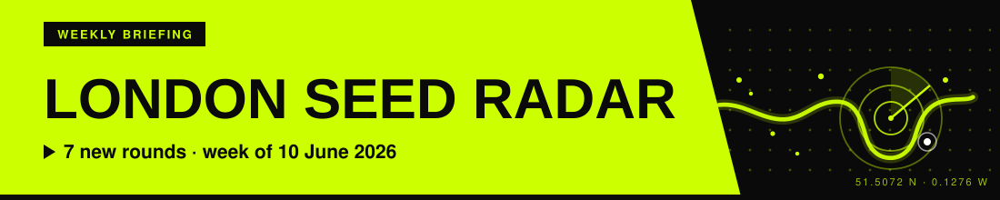
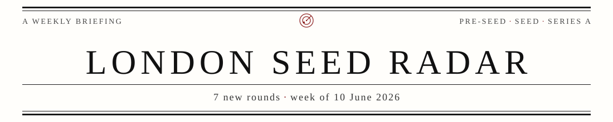
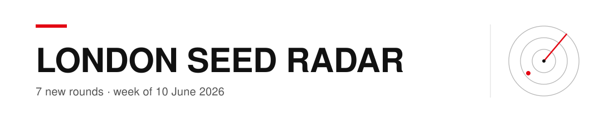
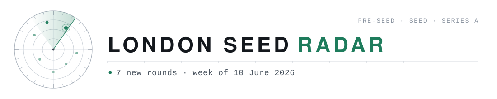
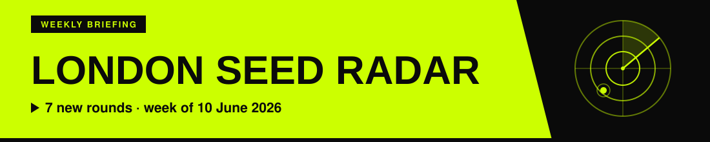
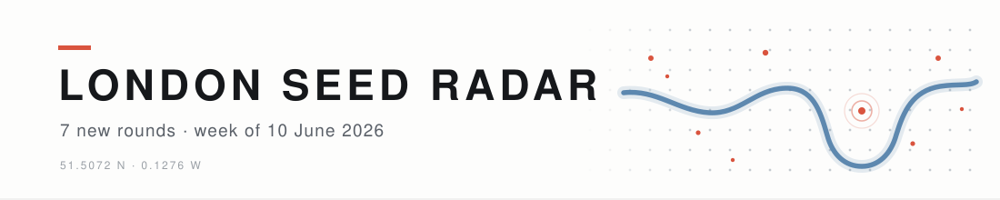

Masthead banner candidates, 1100 x 220
Five design philosophies, one brief. Each is shown at
full size and again at 600px, roughly how it renders in email. All are
self-contained SVGs in reports/design/banners/; the issue line text is
swappable weekly. Pick one to iterate on, or mix elements.
6 · THE HYBRID (Aidan's brief, 2026-06-11): 4's boldness + 5's London map, radar scope centred on the Thames bend

Acid green field and Arial Black from 4; Thames stroke, dot-grid city, round blips, and coordinates from 5, redrawn in green inside the black slab; the radar rings and sweep sit on the river bend, white halo on the freshest round.
1 · Broadsheet: classic newspaper nameplate, serif, Oxford rules, ink-red roundel

Authority and trust; reads like an institution.
2 · Swiss: Helvetica grid, asymmetric, one red accent bar, drawn radar rings

Calm and modern; the layout carries it.
3 · Instrument: literal radar scope, range ticks, 7 blips for 7 rounds, monospace readout

On the nose for the name; the blip count can match each week's rounds.
4 · Colour-block: acid green field, Arial Black, diagonal black slab, poster energy

Loudest of the five; strongest inbox thumbnail.
5 · London map: abstract Thames stroke, dot-grid city, coral blips, coordinates line

Quietly local; the geography says London without a skyline cliche.